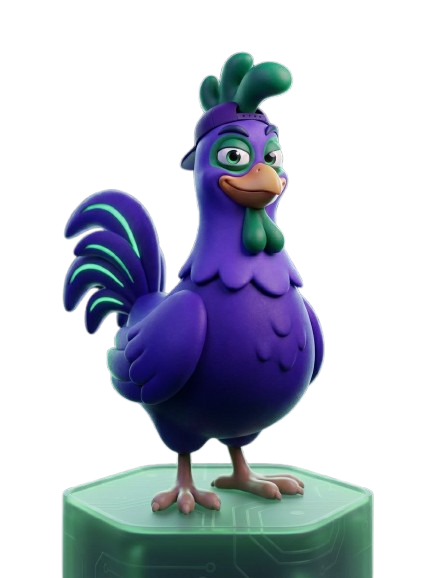
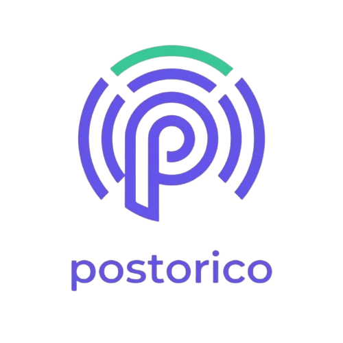

PostoricoOn étudie ta marque une fois : ton ton, tes sujets, tes interdits. Chaque post part de là.
Rien ne part sans toi. Tu lis, tu ajustes, tu publies. Deux heures par mois suffisent.
Valide le lundi matin : ta semaine est programmée avant ton premier café.
LinkedIn, Instagram, Facebook, TikTok, YouTube et Google Business — publiés au bon créneau.
Ton premier post est prêt en moins de 30 secondes.
Lien en bio →